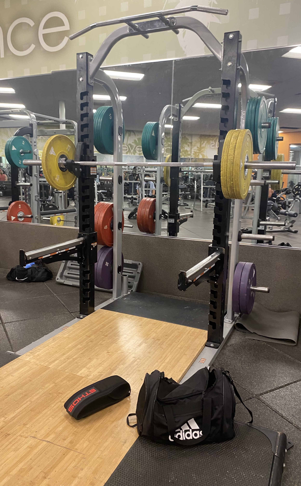
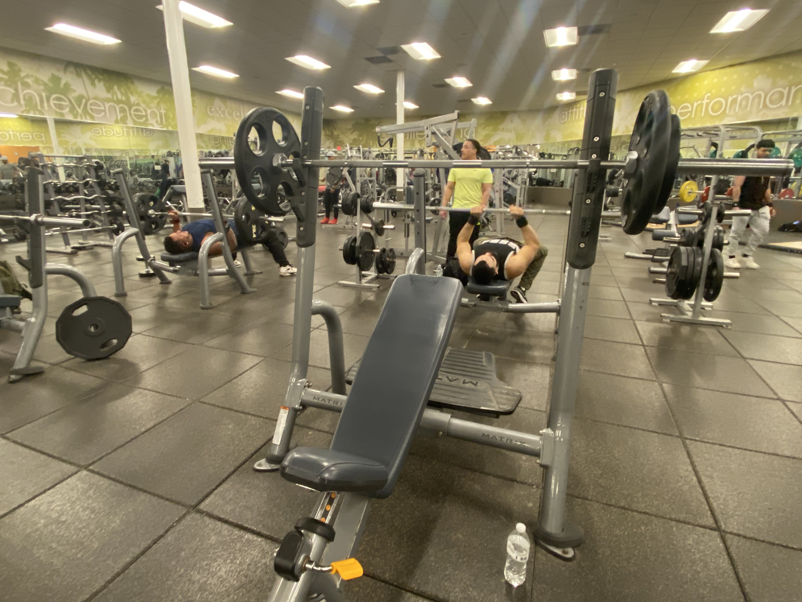
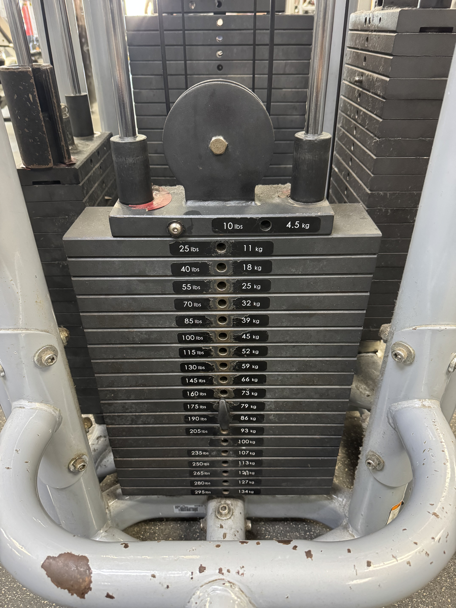
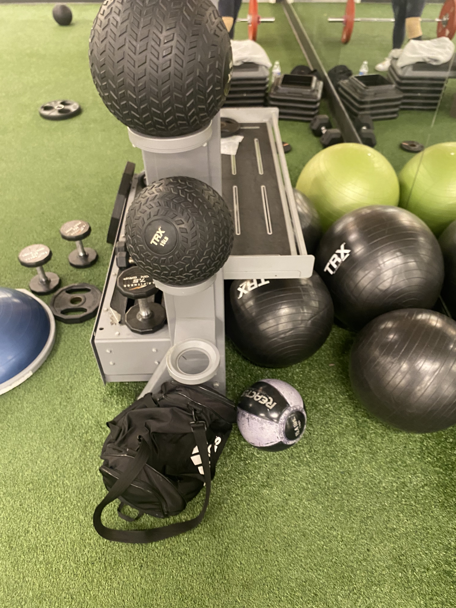
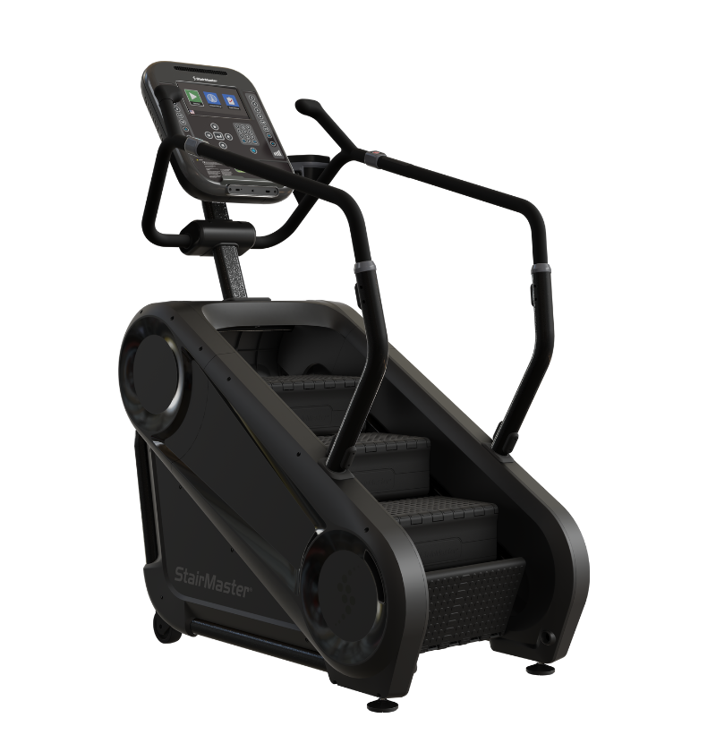
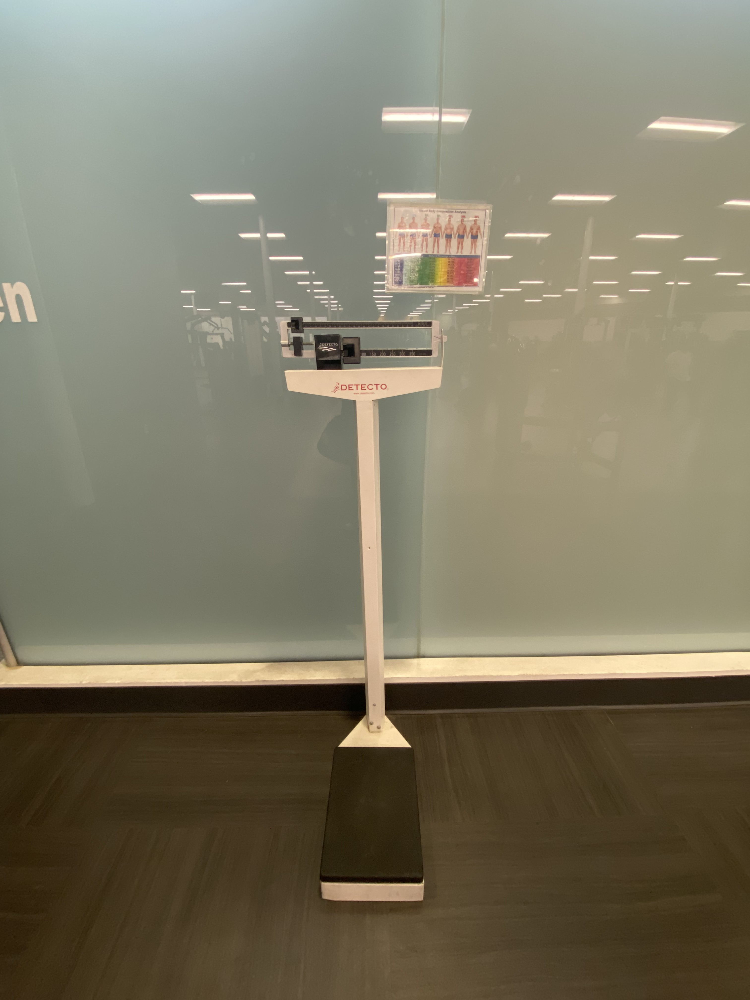
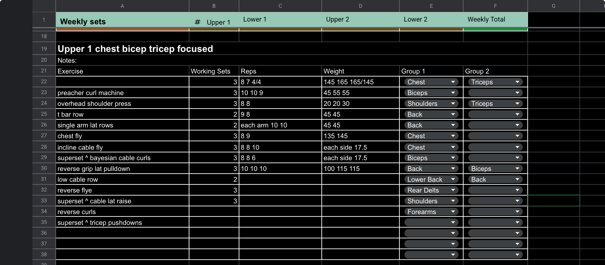

This map marks seven of the main spaces in the gym that matter most for bodybuilding.
The locations are organized into two categories: training areas and support areas.
Training areas are the places where the main lifts and exercises happen, while support
areas focus on tracking, setup, and recovery. Each marker opens to a short popup and links
down to a fuller location profile below.
Map image from the project archive. Marker icons are custom inline SVG graphics built
for this page. Location images below reuse existing project and site imagery where needed.
Location Profiles
Each profile combines a view of the location with descriptive notes, practical data,
and a bodybuilding value rating.
Squat Rack

The squat rack anchors most lower-body bodybuilding sessions because it supports
squats, overhead press, and other heavy compound work that requires stable setup.
Category: Training Area
Main use: Lower-body compounds and rack-based pressing
Location data: Working weight, reps, sets, and rack height
Bodybuilding Value: ★★★★★
Bench Area

The bench area is central for chest development and upper-body pressing, especially
flat bench, incline work, and other repeatable pressing movements.
Category: Training Area
Main use: Chest, triceps, and pressing variations
Location data: Bench PR, working sets, bench angle, and frequency
Bodybuilding Value: ★★★★★
Free Weights / Dumbbell Area

The free-weights area supports a huge range of accessory work, unilateral lifts,
and movements that let bodybuilders add volume outside their main compounds.
Category: Training Area
Main use: Accessory work, dumbbell pressing, rows, and unilateral training
Location data: Top-set weight, rep range, and exercise rotation
Bodybuilding Value: ★★★★☆
Cable Machine

The cable machine is useful for controlled bodybuilding movements that target muscles
from multiple angles, especially when form and tension matter more than absolute load.
Category: Training Area
Main use: Isolation work and constant-tension movements
Location data: Pin setting, attachment choice, sets, and reps
Bodybuilding Value: ★★★★☆
Cardio Area

The cardio area matters most during cutting phases when conditioning, calorie
expenditure, and recovery-aware planning become more important.
Category: Training Area
Main use: Conditioning and calorie expenditure
Location data: Time, calories, pace, and intensity level
Bodybuilding Value: ★★★☆☆
Scale Station

The scale station represents the support side of bodybuilding because it helps track
body weight during bulks, cuts, maintenance phases, and weekly check-ins.
Category: Support / Utility Area
Main use: Tracking body weight and trend changes
Location data: Body weight, weekly average, and phase notes
Bodybuilding Value: ★★★★☆
Recovery / Posing Area

This support area stands for the preparation and regrouping side of bodybuilding,
including posing checks, rest-time organization, and recovery-minded planning.
Category: Support / Utility Area
Main use: Recovery, preparation, and visual progress checks
Location data: Rest time, mobility work, posing notes, and training schedule
Bodybuilding Value: ★★★☆☆
Rating Legend
★★★★★ = Essential bodybuilding station or support point
★★★★☆ = Very useful for regular training and tracking
★★★☆☆ = Helpful depending on phase, goal, or programming